№23 Легкая расчетная задача, МКТ
Разборы
№23. Молекулярная физика. Электродинамика (расчётная задача)
Ещё одна расчётная задача на 2 балла, по структуре и критериям полностью аналогичная №22 — только материал здесь другой: МКТ и термодинамика, электродинамика. Разбираю по подтемам.
Электродинамика
Пример 1) (Решу ЕГЭ №51378 — СтатГрад: тренировочная работа по физике 17.04.2026, вариант ФИ2510501)
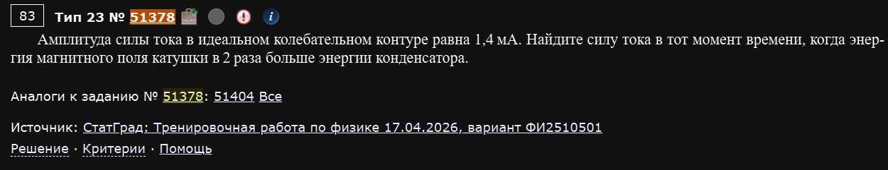
Амплитуда силы тока в идеальном колебательном контуре равна 1,4 мА. Найдите силу тока в тот момент времени, когда энергия магнитного поля катушки в 2 раза больше энергии конденсатора.
В идеальном колебательном контуре полная энергия сохраняется и в любой момент равна энергии, запасённой в катушке в момент максимального тока (когда весь запас энергии — в магнитном поле, на конденсаторе в этот момент заряда нет):
По условию в искомый момент . Значит:
Энергия магнитного поля катушки в любой момент выражается через мгновенную силу тока: . Составим отношение к полной энергии :
Ответ: I ≈ 1,14 мА.
Пример 2) (Решу ЕГЭ №51278 — ЕГЭ-2026, основная волна, пересдача 08.07.2026, разные города, подборка Школково)
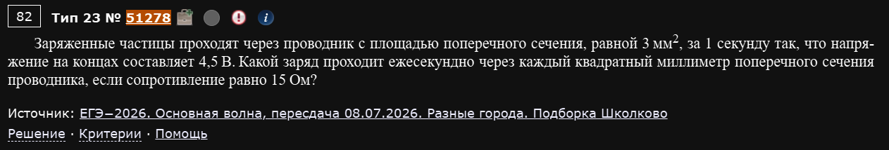
Заряженные частицы проходят через проводник с площадью поперечного сечения, равной 3 мм², за 1 секунду так, что напряжение на концах составляет 4,5 В. Какой заряд проходит ежесекундно через каждый квадратный миллиметр поперечного сечения проводника, если сопротивление равно 15 Ом?
По закону Ома для участка цепи находим силу тока в проводнике:
Сила тока — это заряд, проходящий через всё сечение проводника за секунду: , при с получаем Кл — это заряд через все 3 мм² сечения. Чтобы найти заряд через каждый квадратный миллиметр, делим на площадь сечения:
Ответ: 0,1 Кл через каждый мм².
Пример 3) (Решу ЕГЭ №51277 — ЕГЭ-2026, основная волна, пересдача 08.07.2026, Дальний Восток, вариант Школково)
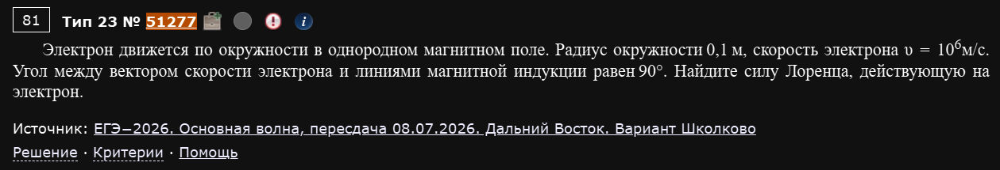
Электрон движется по окружности в однородном магнитном поле. Радиус окружности 0,1 м, скорость электрона υ = 10⁶ м/с. Угол между вектором скорости электрона и линиями магнитной индукции равен 90°. Найдите силу Лоренца, действующую на электрон.
Раз угол между скоростью и полем равен 90° (движение по окружности — это как раз тот случай, когда сила Лоренца всегда играет роль центростремительной силы), можно не искать индукцию поля отдельно, а сразу связать силу Лоренца с центростремительным ускорением по второму закону Ньютона:
Ответ: F ≈ 9,1·10⁻¹⁸ Н.
Не обязательно искать B отдельно
Формально сила Лоренца — это , и по условию можно было бы сначала найти из , а потом подставить в формулу силы. Но раз в задаче уже известен радиус, гораздо короче сразу выразить силу через — это та же самая сила Лоренца, просто записанная через её роль центростремительной силы, без промежуточного вычисления B.
Пример 4) (Решу ЕГЭ №51046 — ЕГЭ-2026, основная волна, резервный день 22.06.2026, разные города, подборка Школково)
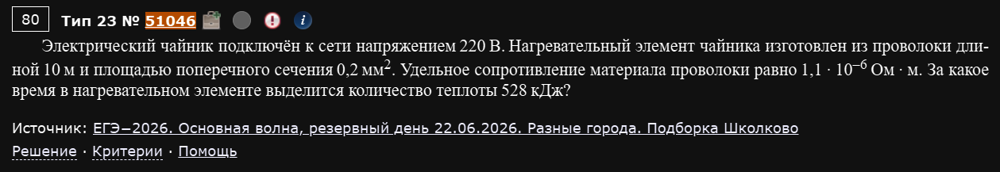
Электрический чайник подключён к сети напряжением 220 В. Нагревательный элемент чайника изготовлен из проволоки длиной 10 м и площадью поперечного сечения 0,2 мм². Удельное сопротивление материала проволоки равно 1,1·10⁻⁶ Ом·м. За какое время в нагревательном элементе выделится количество теплоты 528 кДж?
Сначала находим сопротивление нагревательного элемента по формуле сопротивления проводника:
Мощность, выделяемая на этом сопротивлении при напряжении сети:
Время, необходимое для выделения заданного количества теплоты (работа тока равна мощности, умноженной на время):
Ответ: t = 600 с = 10 мин.
Пример 5) (Решу ЕГЭ №51044 — ЕГЭ-2026, основная волна, резервный день 22.06.2026, разные города, подборка Школково)
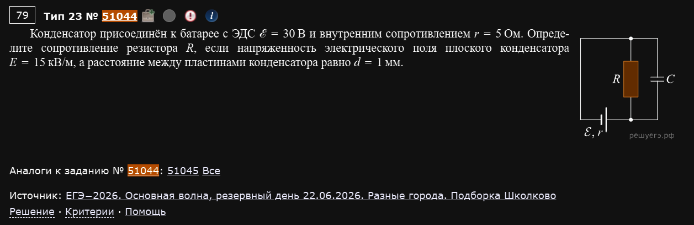
Конденсатор присоединён к батарее с ЭДС ℰ = 30 В и внутренним сопротивлением r = 5 Ом. Определите сопротивление резистора R, если напряжённость электрического поля плоского конденсатора E = 15 кВ/м, а расстояние между пластинами конденсатора равно d = 1 мм.
В установившемся режиме (конденсатор полностью заряжен) ток через ветвь с конденсатором не течёт — значит, конденсатор подключён параллельно резистору R, и напряжение на конденсаторе равно напряжению на резисторе. Сначала находим это напряжение через напряжённость однородного поля конденсатора:
Раз конденсатор не потребляет ток, весь ток от батареи идёт через резистор R (простая последовательная цепь: источник с внутренним сопротивлением r и резистор R). По закону Ома для полной цепи и для участка цепи одновременно:
Из первого уравнения . Подставляем во второе:
Ответ: R = 5 Ом.
Пример 6) (Решу ЕГЭ №50835 — ЕГЭ-2026, основная волна 11.06.2026, Центр, подборка Школково)
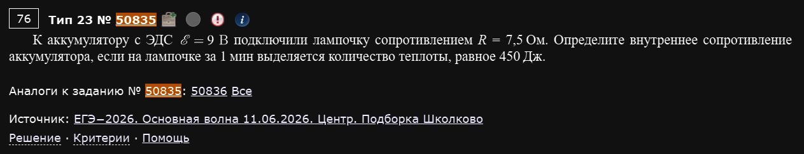
К аккумулятору с ЭДС ℰ = 9 В подключили лампочку сопротивлением R = 7,5 Ом. Определите внутреннее сопротивление аккумулятора, если на лампочке за 1 мин выделяется количество теплоты, равное 450 Дж.
Сначала найдём мощность, выделяющуюся на лампочке, из количества теплоты и времени:
Мощность на резисторе связана с током законом , откуда находим силу тока в цепи:
Теперь применяем закон Ома для полной цепи, чтобы найти внутреннее сопротивление:
Ответ: r = 1,5 Ом.
Пример 7) (Решу ЕГЭ №50839 — ЕГЭ-2026, основная волна 11.06.2026, Центр и Юг, подборка Школково)
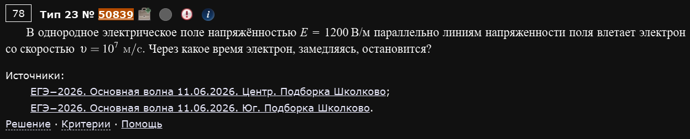
В однородное электрическое поле напряжённостью E = 1200 В/м параллельно линиям напряжённости поля влетает электрон со скоростью υ = 10⁷ м/с. Через какое время электрон, замедляясь, остановится?
На электрон в однородном поле действует постоянная сила , которая вызывает постоянное ускорение (в данном случае — торможение) по второму закону Ньютона:
Раз движение равнозамедленное (постоянное по модулю ускорение, направленное против скорости), время до полной остановки находим из формулы при конечной скорости, равной нулю:
Ответ: t ≈ 4,74·10⁻⁸ с (≈ 47 нс).
Пример 8) (Решу ЕГЭ №50831 — ЕГЭ-2026, основная волна 11.06.2026, Сибирь, подборка Школково)
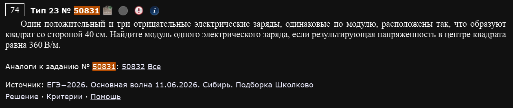
Один положительный и три отрицательных электрических заряда, одинаковые по модулю, расположены так, что образуют квадрат со стороной 40 см. Найдите модуль одного электрического заряда, если результирующая напряжённость в центре квадрата равна 360 В/м.
Удобный приём для такой геометрии — представить систему как суперпозицию: “все четыре заряда равны −q” (поле такой полностью симметричной системы в центре квадрата равно нулю, так как поля от зарядов в противоположных углах попарно компенсируются) плюс “избыточный” заряд в том углу, где реально стоит положительный заряд (поскольку настоящий заряд там равен , а мы уже “учли” в первой части , разница как раз ). Значит, результирующее поле в центре квадрата равно полю от одного точечного заряда величиной , расположенного в углу квадрата, на расстоянии половины диагонали от центра.
Половина диагонали квадрата со стороной :
По закону Кулона (через напряжённость поля точечного заряда):
Ответ: q ≈ 1,6 нКл.
Приём "избыточного заряда" для несимметричных наборов
Если в задаче несколько одинаковых по модулю зарядов расставлены по вершинам симметричной фигуры (квадрат, треугольник и т.п.), но не все одного знака, часто удобно мысленно “долить” или “вычесть” заряд так, чтобы получить полностью однородную по знаку и полностью симметричную конфигурацию (поле которой в центре заведомо равно нулю), и отдельно посчитать поле от оставшейся “разницы”. Это часто короче, чем расписывать векторную сумму полей от всех зарядов по отдельности.
МКТ и термодинамика
Пример 1) (Решу ЕГЭ №44627 — СтатГрад: тренировочная работа по физике 15.10.2025, вариант ФИ2510101)
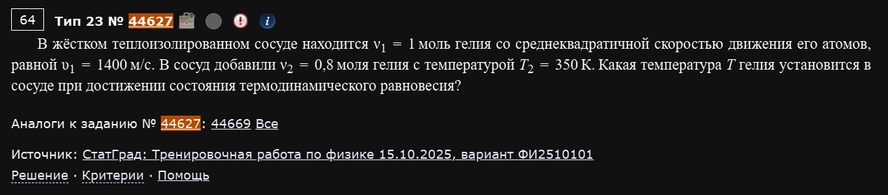
В жёстком теплоизолированном сосуде находится ν₁ = 1 моль гелия со среднеквадратичной скоростью движения его атомов, равной υ₁ = 1400 м/с. В сосуд добавили ν₂ = 0,8 моля гелия с температурой T₂ = 350 К. Какая температура T гелия установится в сосуде при достижении состояния термодинамического равновесия?
Сначала найдём начальную температуру первой порции газа через среднеквадратичную скорость, используя формулу :
Сосуд жёсткий (объём не меняется, работа не совершается) и теплоизолированный (обмена теплом с окружением нет) — значит, при смешивании двух порций одного и того же газа полная внутренняя энергия сохраняется: сколько энергии было у обеих порций по отдельности, столько же станет у смеси при общей температуре T.
Сокращаем на и выражаем T:
Ответ: T ≈ 330 К.
Смешивание одного и того же газа — это просто "средневзвешенная" температура
Когда смешиваются две порции ОДНОГО И ТОГО ЖЕ газа в жёстком теплоизолированном сосуде, результат всегда сводится к формуле — температура получается средней, взвешенной по количеству вещества каждой порции. Это прямое следствие сохранения внутренней энергии для идеального газа — не нужно каждый раз заново расписывать первый закон термодинамики, если сразу узнаёте этот частный случай.
Пример 2) (Решу ЕГЭ №43100)
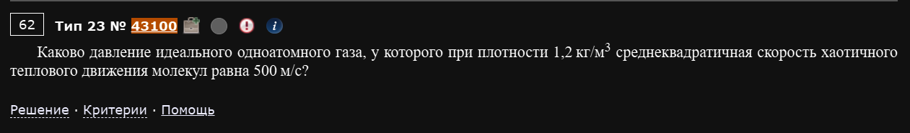
Каково давление идеального одноатомного газа, у которого при плотности 1,2 кг/м³ среднеквадратичная скорость хаотичного теплового движения молекул равна 500 м/с?
Есть прямая формула, связывающая давление идеального газа с плотностью и среднеквадратичной скоростью молекул — она получается из основного уравнения МКТ , если заметить, что (концентрация молекул на массу одной молекулы — это как раз плотность газа):
Ответ: p = 100 кПа.
Формула стоит того, чтобы её запомнить отдельно
Она пригождается именно тогда, когда в условии даны плотность и среднеквадратичная скорость, но не даны ни концентрация, ни масса молекулы, ни температура по отдельности — выводить её каждый раз заново из и дольше, чем сразу применить готовую комбинацию.
Пример 3) (Решу ЕГЭ №38857 — ЕГЭ по физике 21.06.2024, основная волна, резервный день, Центр)
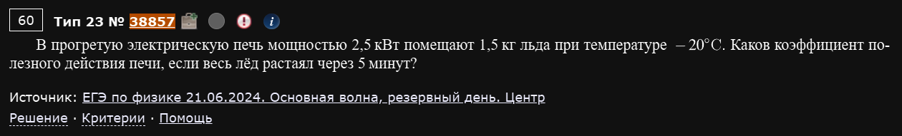
В прогретую электрическую печь мощностью 2,5 кВт помещают 1,5 кг льда при температуре −20°C. Каков коэффициент полезного действия печи, если весь лёд растаял через 5 минут?
КПД печи — это отношение полезно затраченной энергии (той, что реально пошла на нагрев и плавление льда) к полной энергии, потреблённой печью за это время.
Полезная энергия складывается из двух частей: сначала лёд нужно нагреть от −20°C до температуры плавления 0°C, а затем — расплавить при этой температуре:
Полная энергия, потреблённая печью за мин с при мощности Вт:
КПД:
Ответ: η ≈ 74,4%.
Пример 4) (Решу ЕГЭ №25379 — ЕГЭ по физике 11.06.2021, основная волна, Москва)
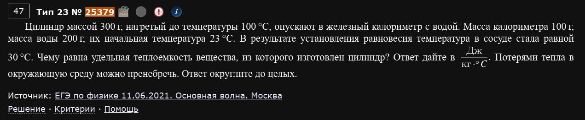
Цилиндр массой 300 г, нагретый до температуры 100°C, опускают в железный калориметр с водой. Масса калориметра 100 г, масса воды 200 г, их начальная температура 23°C. В результате установления равновесия температура в сосуде стала равной 30°C. Чему равна удельная теплоёмкость вещества, из которого изготовлен цилиндр? Потерями тепла в окружающую среду можно пренебречь. Ответ округлите до целых.
Здесь в теплообмене участвуют сразу три тела: остывающий цилиндр отдаёт тепло, а нагреваются и вода, и сам калориметр (его теплоёмкость пренебрегать нельзя — материал калориметра прямо назван, “железный”). Уравнение теплового баланса:
где C — начальная температура цилиндра, C — начальная температура воды и калориметра, C — общая конечная температура, Дж/(кг·К), Дж/(кг·К) — удельная теплоёмкость железа.
Правая часть (тепло, полученное водой и калориметром вместе):
Отсюда выражаем искомую теплоёмкость:
Ответ: c ≈ 295 Дж/(кг·К).
Проверяйте, сколько тел реально нагревается
Частая потеря балла в задачах на тепловой баланс — забыть, что помимо жидкости нагревается ещё и сам сосуд (калориметр), если в условии прямо назван его материал и масса (значит, его теплоёмкость точно нужно учитывать). Если бы про материал калориметра ничего не было сказано, стандартное допущение — теплоёмкостью калориметра пренебречь, и тогда в правой части остался бы только член с водой.
Пример 5) (Решу ЕГЭ №25257)
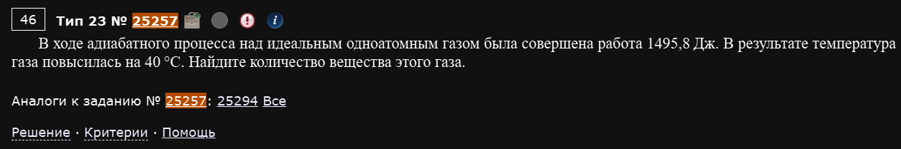
В ходе адиабатного процесса над идеальным одноатомным газом была совершена работа 1495,8 Дж. В результате температура газа повысилась на 40°C. Найдите количество вещества этого газа.
Адиабатный процесс — теплообмена с окружающей средой нет (), поэтому первый закон термодинамики сводится к прямой связи между изменением внутренней энергии и работой:
то есть вся работа, совершённая внешними силами над газом, целиком идёт на увеличение его внутренней энергии. Для одноатомного идеального газа , откуда:
Ответ: ν = 3 моль.
"Работа совершена над газом" vs "газ совершил работу"
Направление этой фразы в условии — не мелочь: если работу совершает газ (расширяется), эта работа положительна в формуле , и при адиабатном расширении температура падает (). Если же работу совершают над газом (сжимают), то энергия поступает в газ, и при адиабатном сжатии температура растёт — как раз наш случай, где температура выросла на 40°C именно потому, что работу совершили над газом, а не газ сам её совершил.